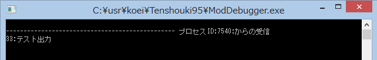

ModDebuggerは、いわば、デバッグ情報の受信機です。
よって、この使い方を理解するためには、
実際にModDebuggerへとデバッグ情報を発信してみるのが一番理解が早いでしょう。
#include <windows.h>
void main(void) {
OutputDebugString("テスト出力");
}
OutputDebugString 関数を少し便利にしましょう。
OutputDebugString関数は、そのままだと、｢char *型｣しか受け入れることができません。
これでは、不便ですので、printfと同じように｢フォーマット書式化文字列｣を使えるような関数として、
｢デバッグ出力(const char *format, ...)」を考えてみましょう。
#include <windows.h>
#include <stdio.h>
void デバッグ出力( const char *format, ... ) {
char szBufDebug[4096] = "";
va_list arg;
va_start(arg, format);
vsprintf_s(szBufDebug, format, arg);
va_end(arg);
OutputDebugString( szBufDebug );
}
void main(void) {
デバッグ出力("%d:%s", 33, "テスト出力");
}

このように、printf と同様に利用できるようになりました。
これなら便利に役立つことでしょう。
なお、ScenarioMod SDKには、この関数｢デバッグ出力｣をさらに発展させたものが搭載されています。